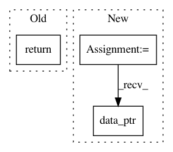

7902b49900cd314ad9de68fb7d6e34bddacf2edc,torch_geometric/nn/functional/max_pool_voxel/scatter_arg_max_gpu.py,,scatter_arg_max_gpu,#Any#Any#Any#,29
Before Change
grid=(get_blocks(num_threads), 1, 1),
stream=Stream(ptr=torch.cuda.current_stream().cuda_stream))
return int_as_float_gpu(max)
After Change
input.data_ptr(),
cluster.data_ptr(),
max.data_ptr(),
argmax.data_ptr()
],
block=(cuda_num_threads, 1, 1),
grid=(get_blocks(num_threads), 1, 1),
stream=Stream(ptr=torch.cuda.current_stream().cuda_stream))
In pattern: SUPERPATTERN
Frequency: 3
Non-data size: 3
Instances
Project Name: rusty1s/pytorch_geometric
Commit Name: 7902b49900cd314ad9de68fb7d6e34bddacf2edc
Time: 2017-11-25
Author: matthias.fey@tu-dortmund.de
File Name: torch_geometric/nn/functional/max_pool_voxel/scatter_arg_max_gpu.py
Class Name:
Method Name: scatter_arg_max_gpu
Project Name: rusty1s/pytorch_geometric
Commit Name: 314ee5916b0427e3cd27e017265e34d1b22da48f
Time: 2017-10-26
Author: janeric.lenssen@tu-dortmund.de
File Name: torch_geometric/nn/functional/spline_gcn/spline_gpu.py
Class Name: SplineWeightsGPU
Method Name: forward
Project Name: explosion/thinc
Commit Name: cc8d7ba5562cb2335d975b67e88a81a6bc9b0f46
Time: 2020-01-12
Author: honnibal+gh@gmail.com
File Name: thinc/backends/_cupy_allocators.py
Class Name:
Method Name: cupy_pytorch_allocator